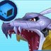

- 세대
- 완전체
- 종족
 백신
백신- 속성
 땅
땅- 소비 메모리
- 12
- 장비 슬롯
- 3
스테이터스 (Lv.99)
HP202024위/78
SP13357위/78
ATK2428위/78
INT11863위/78
DEF13373위/78
SPD2129위/78
막대 길이는 등록된 디지몬 중 최고값 대비 비율이에요. 순위는 스테이터스가 등록된 디지몬끼리 비교해요.
필살기 1
카이저네일  무 SP 15
무 SP 15
디지몬 속성(땅)과 다름
적 1체에 무속성 위력 120의 물리공격.
SS(서포트스킬)
야생의 고동
민첩이 15% 상승한다.
계승기 (레벨업 습득) 4
이 디지몬이 레벨업으로 배우는 스킬이에요. 배운 스킬은 진화·퇴화해도 계속 쓸 수 있어요.
| 습득 Lv | 스킬 | 속성 | SP |
|---|---|---|---|
| 15 | 어스퀘이크 I 적 전체에 땅속성 위력 30의 물리공격. 명중률 95%. | 4 | |
| 25 | 메테오 폴 I 적 전체에 불속성 위력 30의 물리공격. 명중률 95%. | 4 | |
| 35 | 코멧 해머 III 적 1체에 땅속성 위력 105의 물리공격. 명중률 95%. | 9 | |
| 45 | 어스퀘이크 II 적 전체에 땅속성 위력 45의 물리공격. 명중률 95%. | 7 |
이 디지몬이 강한 상대
상대 종족(세로)과 속성(가로)별로 이 디지몬의 공격 필살기 중 가장 높은 배율이에요. 칸에 마우스를 올리면 계산 근거가 보여요.
×3 이상×2 이상보통×1 미만
| 상대 ↓ / → | |||||||||
|---|---|---|---|---|---|---|---|---|---|
| 백신 | ×1.00 | ×1.00 | ×1.00 | ×1.00 | ×1.00 | ×1.00 | ×1.00 | ×1.00 | ×1.00 |
| 데이터 | ×0.50 | ×0.50 | ×0.50 | ×0.50 | ×0.50 | ×0.50 | ×0.50 | ×0.50 | ×0.50 |
| 바이러스 | ×2.00 | ×2.00 | ×2.00 | ×2.00 | ×2.00 | ×2.00 | ×2.00 | ×2.00 | ×2.00 |
| 프리 | ×1.00 | ×1.00 | ×1.00 | ×1.00 | ×1.00 | ×1.00 | ×1.00 | ×1.00 | ×1.00 |
등록된 디지몬 중 ×2 이상으로 공격할 수 있는 상대 114마리
완전체 같은 세대 26 · 다른 세대 상대는 도감에서 볼 수 있어요.
그라운드라몬×2.00기가드라몬×2.00데이터몬×2.00드라고몬×2.00레이디데블몬×2.00루체몬FM×2.00마타돌몬×2.00메가드라몬×2.00메가로그라우몬×2.00메탈그레이몬(청)×2.00메탈티라노몬×2.00묘티스몬×2.00베이더몬×2.00블랙킹워매몬×2.00블루메라몬×2.00스컬그레이몬×2.00스컬사탄몬×2.00알카디몬 완전체×2.00에테몬×2.00와이즈몬×2.00왕개굴몬×2.00왕쿠가몬×2.00워가루몬(흑)×2.00쥬레이몬×2.00캐논벌몬×2.00팬텀몬×2.00
진화 전 디지몬 (퇴화 가능) 5
진화 가능 디지몬 3

메탈가루몬
- 레벨 55 이상
- 공격력이 130 필요
- 방어력이 120 필요
- 민첩이 150 필요
- 재능이 20 필요
- 우정이 80% 필요
메탈가루몬(흑)
- 레벨 55 이상
- 방어력이 135 필요
- 민첩이 125 필요
- 재능이 20 필요
미라쥬가오가몬
- 레벨 55 이상
- 공격력이 120 필요
- 민첩이 130 필요
- 재능이 20 필요
진화 트리 · 워가루몬까지 오는 길 + 다음 진화
왼쪽부터 진화 순서예요. 워가루몬 오른쪽(점선 칸)은 바로 다음 진화 1단계예요. 그 뒤가 궁금하면 그 디지몬을 눌러 따라가 보세요. 선은 출발하는 디지몬의 색을 따라가요. 디지몬을 한 번 누르면 거기서 워가루몬까지 가는 경로만 남고, 한 번 더 누르면 그 디지몬 페이지로 이동해요. 회색 칸은 아직 정보가 없는 디지몬이에요.
🧭 도감에서 워가루몬 진화 루트 찾기